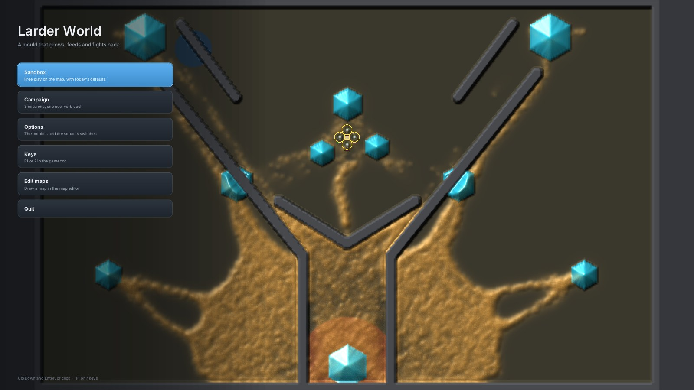
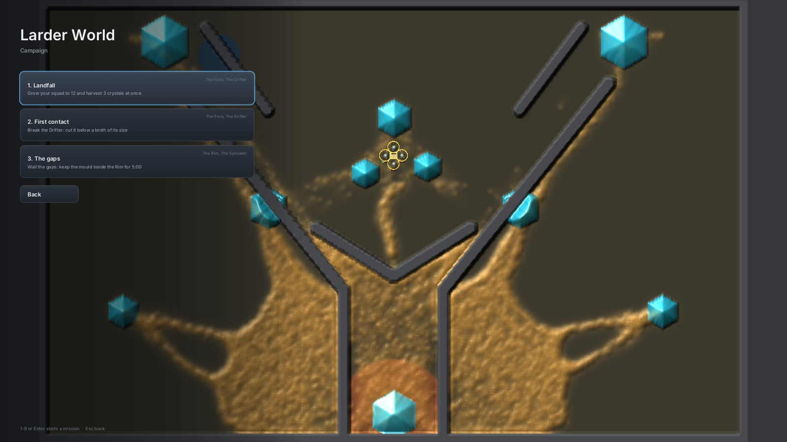
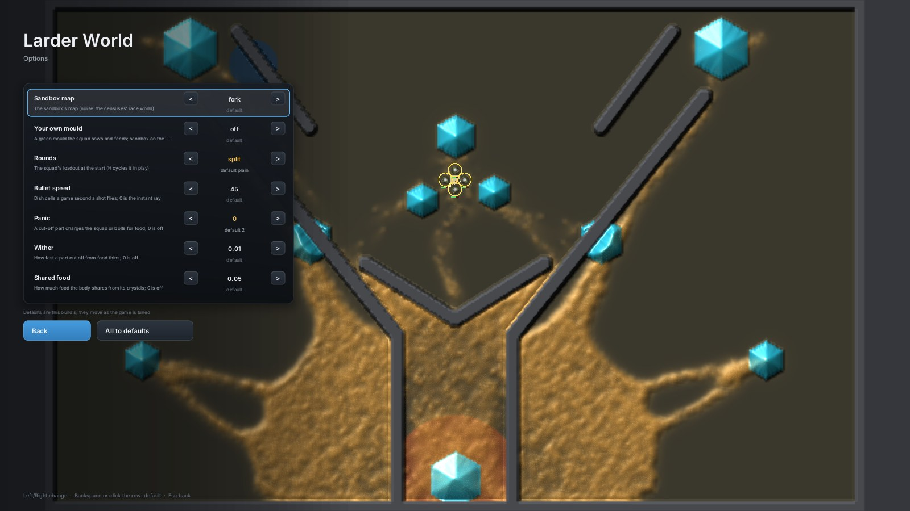
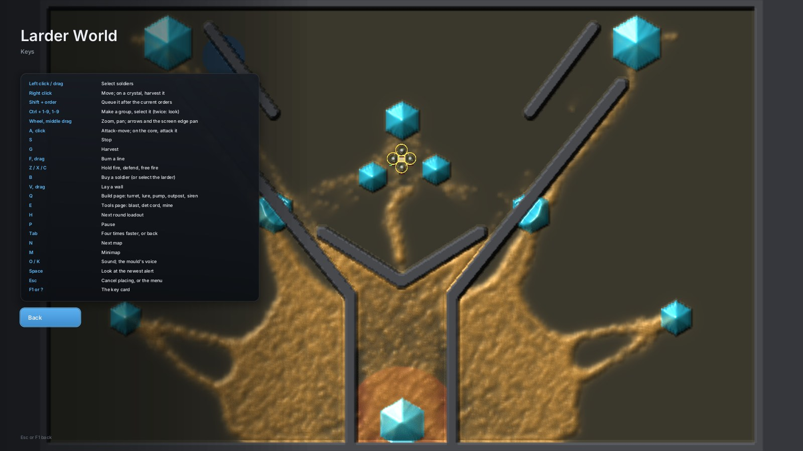

<title>Larder World Start Menu</title>
<meta name="claude:viewport-fit-sides" content="cover">
<link rel="stylesheet" href="https://fonts.googleapis.com/css2?family=Inter:wght@400;500;600&family=Space+Grotesk:wght@500;600&display=swap">
<style>
/* Layout: one column of captioned screenshots, each with what it shows beside or under it. */
:root {
  --bg: #f3f5f7; --fg: #1a2028; --muted: #5b6673; --line: #d9dee4; --card: #ffffff; --accent: #2f7fc0; --amber: #b07a10;
  --display: "Space Grotesk", "Inter", system-ui, sans-serif;
  --body: "Inter", system-ui, -apple-system, "Segoe UI", sans-serif;
}
@media (prefers-color-scheme: dark) { :root:not([data-theme="light"]) { --bg: #0e1216; --fg: #e8ecf0; --muted: #93a0ad; --line: #26303a; --card: #161c22; --accent: #60beff; --amber: #f2c054; color-scheme: dark } }
:root[data-theme="dark"] { --bg: #0e1216; --fg: #e8ecf0; --muted: #93a0ad; --line: #26303a; --card: #161c22; --accent: #60beff; --amber: #f2c054; color-scheme: dark }
body { background: var(--bg); color: var(--fg); font-family: var(--body); font-size: 15px; line-height: 1.55; }
main { max-width: 1080px; margin: 0 auto; padding-block: 32px 64px; padding-left: max(16px, env(safe-area-inset-left, 0px)); padding-right: max(16px, env(safe-area-inset-right, 0px)); display: grid; gap: 40px; }
h1 { font-family: var(--display); font-weight: 600; font-size: 2rem; margin: 0 0 8px; text-wrap: balance; }
h2 { font-family: var(--display); font-weight: 600; font-size: 1.25rem; margin: 0; }
p { margin: 0; max-width: 68ch; }
.lede { color: var(--muted); }
header { display: grid; gap: 10px; }
figure { margin: 0; display: grid; gap: 12px; }
figure img { width: 100%; height: auto; border-radius: 10px; border: 1px solid var(--line); display: block; }
figcaption { display: grid; gap: 6px; }
.meta { color: var(--muted); font-size: 13px; font-variant-numeric: tabular-nums; }
code { font-family: ui-monospace, "SFMono-Regular", Menlo, monospace; font-size: 0.9em; background: var(--card); border: 1px solid var(--line); border-radius: 5px; padding: 0 4px; overflow-wrap: anywhere; }
.amber { color: var(--amber); font-weight: 600; }
section.notes { display: grid; gap: 10px; background: var(--card); border: 1px solid var(--line); border-radius: 12px; padding: 20px; }
ul { margin: 0; padding-left: 20px; display: grid; gap: 6px; }
</style>
<main>
  <header>
    <h1>Larder World start menu</h1>
    <p class="lede">The window now opens on a menu when you run it with no arguments, or with <code>menu=1</code>. A live sandbox round plays behind the menu, so what you see there is the simulation, not a backdrop. Any other command line still starts its round straight away.</p>
    <p class="meta">Pictures from <code>larder-world look=DIR menu=PAGE hand=idle at=20 screen=1600x900</code> on the cloud's software Vulkan (llvmpipe), Fork, seed 1, shape C, 20 game seconds in. At 20 s: mould 24,555 walkers, 4 soldiers left standing idle, 681 walkers killed by their 75 shots. The yellow rings mark the soldiers the recording selects; the window doesn't select anyone under the menu.</p>
  </header>

  <figure>
    
    <figcaption>
      <h2>Main page</h2>
      <p>Sandbox plays the map and options as set. Its subtitle lists any option you changed. Campaign lists the missions. Edit maps starts the map editor (<code>larder-edit</code>) in its own window, or says how to build it if it isn't built. Up/Down and Enter work, and so does the mouse. F1 or ? opens the key card from any page.</p>
    </figcaption>
  </figure>

  <figure>
    
    <figcaption>
      <h2>Campaign</h2>
      <p>The menu reads each mission from its file in <code>Reports/larder-campaign-2026-11-12/missions/</code>: its name, its goal, and its map and mould. So missions 4 to 7 will show up here once their files land. Press 1-9, or click, to start a mission, which plays as <code>mission=STEM</code> does.</p>
    </figcaption>
  </figure>

  <figure>
    
    <figcaption>
      <h2>Options</h2>
      <p>Seven switches: sandbox map, your own mould, rounds, bullet speed, panic, wither and shared food (<code>energy_flow</code>). Each row shows its default under the value, and a value off the default turns <span class="amber">amber</span>. This picture ran with <code>panic=0 rounds=split</code> on the command line, which preset those two rows. Left/Right changes a row; Backspace or a click on the row puts it back to default. Panic, wither and shared food default to shape C's values. A mission keeps its own mould unless you change one of them.</p>
    </figcaption>
  </figure>

  <figure>
    
    <figcaption>
      <h2>Keys</h2>
      <p>The menu's key card. In play, F1 or ? now opens the game's own controls page straight away and pauses. Pressing it again, or Esc, goes back to play. The Esc menu and the end screen also have a Main menu button that returns to this menu over a fresh dish.</p>
    </figcaption>
  </figure>

  <section class="notes">
    <h2>What wasn't checked</h2>
    <ul>
      <li>Clicking through the live window: the cloud has no screen. The tests click every page at 640x400 up to 3840x2160, and check that the Sandbox you get from the menu plays exactly the bare command line's round.</li>
      <li>Frame cost on the GTX 1070. The menu draws on the HUD's canvas in place of the HUD, and only while it is up.</li>
    </ul>
  </section>
</main>
